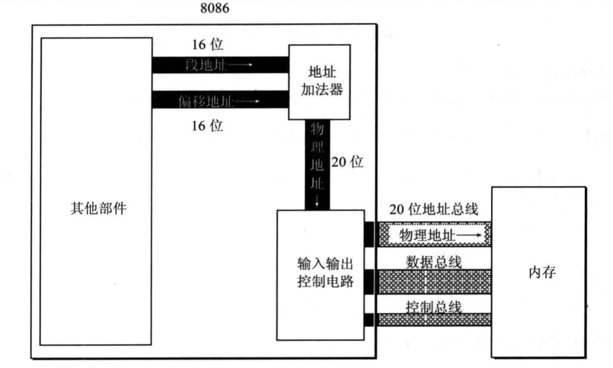
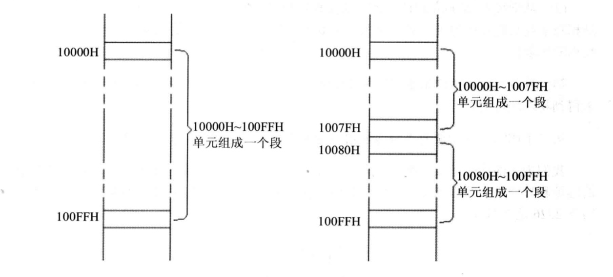
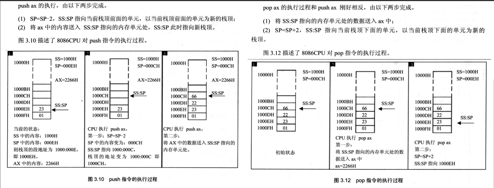
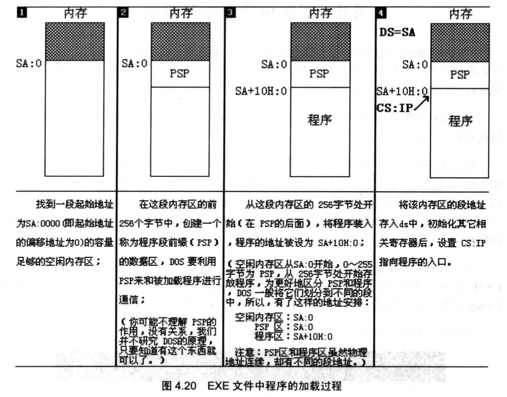
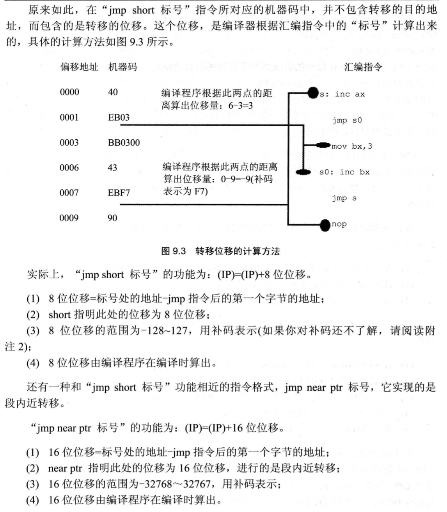

20201203-20201221
cpu内部组成
- 运算器 -- 进行信息处理
- 寄存器 -- 进行信息存储
- 控制器 -- 控制各种器件工作
- 内部总线 -- 链接各种器件(运算器、寄存器、控制器)，在他们之间进行数据传送
cp与存储器通信
地址总线
- 存储单元的地址(地址信息)
- 决定cpu的寻址能力 例如 地址总线宽度为16，则寻址能力为 216 B= 65536B = 65536/1024kb = 64kb; 地址总线宽度为32， 则寻址能力为 232 B = 232 /1024/1024/1024 G = 4G
数据总线
- 读或写的数据(数据信息)
- 决定cpu与其他器件进行数据传送时的一次数据传送量
控制总线
- 器件的选择，读或写命令(控制信息)
- 决定cpu对系统中其他器件的控制能力
存储单元
计算机的最小信息单位是 bit，即一个二进制位
8 个bit组成 1个Byte，即一个字节
RAM (Random Access Memory) 随机读写存内存 断电丢数据
ROM (Read Only Memory) 只读内存 断电不丢数据，不能改写数据，一般用来做 BIOS(Basic Input/Oupur System)
内存地址空间
cpu将各类存储器看做一个逻辑存储器,对cpu来说，系统中所有存储器中的存储单元都处在一个统一的逻辑存储器中，它的容量收CPU寻址能力的上限，这个逻辑存储器就是我们说的内存地址空间

寄存器
寄存器: AX、BX、CX、DX、 IP、SP、SI、DI、BP、 CS、SS、DS、ES、 PSW
通用寄存器:AX、BX(可能存储内存单元地址或者内存单元的长度)、CX(可能存储loop代码段循环的次数)、DX
段寄存器: CS(执行指令的段寄存器)、SS(栈的段寄存器)、DS(数据的段寄存器)、ES
IP(指令的偏移地址)、SP(栈的偏移地址)、
CS:IP SS:SP
SI、DI 是8086中和bx功能相近的寄存器，si、di不能够拆分成两个8位寄存器
8086CPU中所有的寄存器都是16位，可以存放两个字节
AX、BX、CX、DX 这4个寄存器通常用来存放一般性数据，被称为通用寄存器
这四个寄存器可分为2个独立使用的8位寄存器(8086上一代寄存器都是8位，为了兼容上一代)
AX 可分为 AH、AL
BX 可分为 BH、BL
CX 可分为 CH、CL
DX 可分为 DH、DL
处于兼容考虑， 8086cpu可一次性处理以下两种尺寸的数据
- 字节 byte；一个字节由8个bit组成，可以存在8位寄存器中
- 字 word；一个字由2个字节组成，这两个字节分别称为这个字的 高位字节 和 低位字节，高位字节和低位字节存在寄存器中的高8位和低8位寄存器
汇编指令
| 汇编指令 |
控制cpu完成的操作 |
用高级语言的语法描述 |
| move ax,18 |
将18送入寄存器AX |
AX=18 |
| move bx,ax |
将寄存器AX中的数据送入BX |
BX=AX |
| add ax,8 |
将寄存器AX中的数值加上8 |
AX=AX+8 |
| add ax,bx |
将AX和BX中的数值相加，结果存入AX中 |
AX=AX+BX |
16位机概念
cpu访问内存单元时，要给出内存单元的地址。所有的内存单元构成的存储空间是一个一维的线性空间，每一个内存单元在这个空间中有唯一的地址，这个唯一的地址称为物理地址
cpu通过地址总线送入寄存器的，必须是一个内存单元的物理地址。
8086是16位机，也可以说8086是16位结构的cpu(16位机:字长位16位的常见说法，也就是说在cpu内部，能够一次性处理、传输、暂时存储的信息的最大长度时16位。内存单元的地址在送上地址总线之前，必须在cpu中进行处理、传输、暂时存放)，特点:
- 运算器一次最多可以处理16位的数据
- 寄存器的最大宽度为16位
- 寄存器和运算器之间的通路为16位
8086cpu特殊处理
8086cpu有20位地址总线，可以传送20位地址，达到 220 B = 220 /1024/1024 MB = 1MB寻址能力.
8086又是16位结构，在内部一次性处理、传输、暂存的地址为16位，表现出的寻址能力只有 216 B = 64KB
故8086特殊处理，在内部采用2个16位地址合成的方法形成一个20位的物理地址

- CPU中的相关部件提供两个16位的地址，一个是段地址，一个是偏移地址
- 段地址和偏移地址通过内部总线送入地址加法器
- 地址加法器将2个16位地址合成一个20位的 物理地址 = 段地址(SA)*16 + 偏移地址(EA)
- 地址加法器通过内部总线将20位的物理地址送入输入输出控制电路
- 输入输出控制电路将20位物理地址送上地址总线
- 20位物理地址被地址总线送入存储器
段地址
其实内存并没有分段，段的划分来自CPU，由于8086CPU用 基础地址(段地址)*16+偏移地址=物理地址 的方式给出内存单元的物理地址，使得我们可以用分段的方式管理内存(段地址*16 *16在16进制中即左移1位)
地址 10000H ~ 100FFH 的内存单元组成一个段，改短的起始地址(基础地址)为10000H，段地址为 1000H，大小为100H (这里的H代表16进制计数)
分为两个地址：
- 10000H~1007FH 起始地址:10000H 段地址:1000H 大小80H
- 10080H~100FFH 起始地址:10080H 段地址:1008H 大小80H

编程时可根据实际需要，将若干地址连续的内存党员看做一个段，用段地址*16定位段的起始地址(基础地址)，用偏移地址定位段中的内存单元。
注意:
- 段地址*16必然是16的倍数，故一个段的起始地址也一定是16的倍数
- 偏移地址为16位，16位地址的寻址能力为64KB，所以一个段的长度最大为64KB
段寄存器
段寄存器: CS、DS、SS、ES 用来提供段地址
CS 和 IP
CS和IP是8086中最关键的两个寄存器，他们指示了cpu当前要读取指令的地址
CS: 代码段寄存器， 若值为M
IP: 指令指针寄存器，若值为N
则CPU将从内存 M*16+N 单元开始，读取一条指令并执行
图解执行流程

在8086CPU加点启动或复位后(即CPU刚开始工作时)CS和IP被设置为CS=FFFFH，IP=0000H，即在8086机刚启动时，CPU从内存FFFF0H单元中读取指令，该单元的指令为8086机开机后执行的第一条指令
问: CPU根据什么将内存中的信息当做指令
答: CPU将CS:IP指向的内存单元中的内容看做指令
修改CS、IP的指令
传送指令: 修改大部分寄存器的值的命令可以用 move 指令， 如 move ax, 123 (move无法更改cs ip寄存器的值)
转移指令: 修改CS、IP寄存器的值的命令可以用 jmp 指令， 如 jmp 2AE3:3, 执行后， CS=2AE3H, IP=0003H
jmp指令格式: jmp 段地址:偏移地址 功能:用指令给出的段地址修改CS，偏移地址修改IP
内存中字的存储
字单元的概念: 即存放一个字型数据(16位)的内存单元，有两个地址连续的内存单元组成，高地质内存单元存放字型数据的高位字节，低地址内存单元存放字型数据的低位字节
将起始地址为N的字单元简称为N地址字单元。 e.g 一个字单元由2、3两个内存单元组成，则这个字单元的其实地址为2，我们可以说这时2地址字单元
| 地址 |
内容 |
| 0 |
20H |
| 1 |
4EH |
| 2 |
12H |
| 3 |
00H |
|
|
上表中:
0地址单元中存放的字节型数据为:20H
0地址字单元中存放的字型数据为:4E20H
2地址单元中存放的字节型数据为:12H
2地址字单元中存放的字型数据为:0012H
1地址字单元中存放的字型数据为:124EH
DS 寄存器
DS寄存器，通常用来存放要访问的数据的段地址
## 程序段分析:
move bx, 1000H
move ds, bx ## 将 1000H 放入 ds，作为段地址
mov al, [0] ## move 有多种形式:
## 1. move 寄存器，数据 e.g mov bx, 8
## 2. move 寄存器，寄存器 e.g move ax, bx
## 3. move 寄存器，内存单元 e.g move ax, [0]
## 4. move 内存单元，寄存器 e.g move [0], ax
## 5. move 段寄存器，寄存器 e.g move ds, ax
## 6. move 寄存器，段寄存器 e.g move ax, ds
## 上面代码段中[...] 表示一个内存单元 [...]中的0表示内存单元的偏移地址， 那么段地址从 8086cpu会自动取ds中的数据数据
## 上面代码段实际要 move 到 al 寄存器的内容是 是 1000*16 + 0 这个地址的内容
## 另外为什么 不 直接 move ds, 1000H 而要先 move bx,1000H 再 move ds, bx
## 原因是 ds 是段寄存器，8086不支持数据直接写入(硬件设计的问题)，而bx是通用寄存器，可以直接写入
CPU提供的栈机制
8086的入栈出栈操作都是以字为单位进行的
push ax 将寄存器ax中的数据送入栈中
pop ax 从栈顶去除数据送入ax
cpu如何知道栈顶的位置:
SS:SP 指向栈顶元素
SS段寄存器， SP 寄存器

源程序
assume cs:codesg ## 假设 某一段寄存器和程序中的 某一个用 segment...ends 定义的段相关联
codesg segment ## 段名为 codesg 开始 开始标记 segment
move ax, 0123H
move bx, 0456H
add ax, bx
add ax, ax
move ax, 4c00H ####
int 21H #### 这两条是程序返回，将CPU的控制权交还回去
codesg ends ## 段名为 codesg 结束 开始标记 ends
end ## 汇编程序结束标记， 编译器若遇到 end，则结束对源程序的编译
汇编程序从写出到执行的过程
编程 --> 1.asm --> 编译 --> 1.obj --> 连接 --> 1.exe --> 加载 --> 内存中的程序 --> 运行
Edit -------------> masm -------------> link ------------> command ------------------> CPU
exe文件中程序的加载过程

- 程序加载后，ds中存放着程序所在内存区的段地址，这个内存区的偏移地址为0，则程序所在的内存区的地址为 ds:0
这个内存区的前256个字节中存放的是PSP，DOS用来和程序进行通信。从256字节后的空间存放的是程序，所以:
- 从ds中可以得到PSP的段地址SA，PSP的偏移地址为0，则物理地址为SA*16+0
- 因PSP占256(100H)字节，所以程序的物理地址为: SA*16+0+256=SA*16*16*16+0=(SA+16)*16+0，用段地址和偏移地址表示则为: SA+10H:0
## 源程序:利用栈，将程序中定义的数据逆序存放
assume cs:codesg
codesg segment
dw 0123h,0456h,0789h,0abch,0defh,0fedh,0cbah,0987h
dw 0,0,0,0,0,0,0,0,0,0,0,0,0,0,0,0 ## 用dw定义16个字型数据，在程序加载后，将得到16个字的内存空间，用来存放16个数据，后面将这段空间当成栈使用
start: move ax,cx
move ss, ax
move sp, 30h ## 将设置栈顶ss:sp指向cs:30
move bx, 0
move cx, 8 ## cx寄存器作用可能是指明 loop的次数
s: push cs:[bx]
add bx, 2 ## 以上将代码段0-15单元中的8个字型数据一词入栈
loop s
move bx, 0
move cx, 8
s0: pop cs:[bx]
add bx, 2
loop s0 ## 以上依次出栈8个字型数据到代码段0-15单元中
move ax, 4c00h
int 21h ## 返回程序
codesg ends
end start ## 指明程序的入口在start处
## 改写上面程序，将数据、栈和代码放到不同的段中
asume cs:code, ds:data, ss:stack
data segment
dw 0123h,0456h,0789h,0abch,0defh,0fedh,0cbah,0987h
data ends
stack segment
dw 0,0,0,0,0,0,0,0,0,0,0,0,0,0,0,0
stack ends
code segment
start: move ax, stack
move ss, ax
move sp, 20h ## 设置栈顶 ss:sp 指向 stack:20
move ax, data
mov ds, ax ## ds指向data段
mov cx,8
s: push [bx]
add bx, 2
loop s ## 以上将data段中的0-15单元中的8个字型数据依次入栈
move bx, 0 ## 将 ds:bx 指向data段的第一个单元
move cx, 8
s0: pop [bx]
add bx, 2
loop s0 ## 以上依次出栈8个字型数据到data段的0-15单元中
move ax, 4c00h
int 21h ## 返回程序
code ends
end start
BX 寄存器
要完整地描述一个内存单元，需要两个信息:
- 内存单元的地址
- 内存单元的长度(类型)
move al, [0]
[0] 表示一个内存单元时， 0表示单元的偏移地址， 段地址默认在ds中，单元的长度类型可以由具体指令中的其他操作对象(比如寄存器 bx)支出
move ax, [bx]
将一个内存单元的内容送入ax，这个内存单元的长度为2字节(字单元)，存放一个字，偏移地址在bx中，段地址在ds中
move al, [bx]
讲一个内存单元的内容送入al，这个内存单元的长度为1字节(字节单元)，存一个字节，偏移地址在bx中，段地址在ds中
段前缀
move ax, es:[bx]
将一个内存单元的内容送入ax，这个内存单元的长度为2字节(字单元)，存放一个字，偏移地址在bx中，段地址在es中
es:[bx] ex: 这种勇于显式地指明内存单元的段地址，在汇编语言中被称为 段前缀
例如 ds: cs: ss: es:
and or 指令
move al, 01100011B
add al, 00111011B
执行完 al:00100011B and 即 位运算 and
move al, 01100011B
or al, 00110111B
执行完 al:01110111B or 即 位运算 or
ASCII
我们按一下键盘的a键，就会在屏幕上看到"a"，这个过程:
我们按下键盘的a键，这个按键的信息被传入计算机，计算机使用ASCII码的规则对其进行编码，将其转化为61H存储在内存的指定空间中
文本编辑器软件从内存中取出61H，将其送到显卡的显存中
工作在文本模式下的显卡，用ASCII码的规则解释显存中的内容，61H被当做字符"a"，显卡驱动显示器，将字符"a"的图像滑到屏幕上
[bx+idata]、[bx+si] [bx+di]、[bx+si+idata] [bx+di+idata]
move ax, [bx+200]
将一个内存单元的内容送入ax，这个内存单元的长度为2个字节(字单元)，存放一个字，偏移地址为bx中的数值加上200，段地址在ds中 即 (ax)=((ds)*16+(bx)+200)
SI、DI 是8086中和bx功能相近的寄存器，si、di不能够拆分成两个8位寄存器
move ax, [bx+si]
将一个内存单元的内容送入ax，这个内存单元的长度为2字节(字单元)，存放一个字，偏移地址为bx中的数值+si中的数值，段地址在ds中 即 (ax)=((ds)*16+(bx)+(si))
[bx+si+idata]
将一个内存单元的内容送入ax，这个内存单元的长度为2字节(字单元)，存放一个字，偏移地址为bx中的数值+si中的数值+idata，段地址在ds中 即(ax)=((ds)*16+(bx)+(si)+idata)
```
将 大写 转 小写
assume cs:codesg,ds:datasg
datasg segment
db 'BaSic'
db 'MinIx'
datasg ends
codesg segment
start: move ax, datasg
move ds, ax
move bx, 0
move cx, 5
####################################################
s: move al, [bx]
add al, 11011111b ## 将al中ASCII码的第5位置为0，变为大写字母
move [bx], al ## 将转变后的ASCII码写会原单元
inc bx
loop s
move bx, 5
move cx, 5
s0: move al, [bx]
or al, 00100000b ## 将al中ASCII码的第5位置的1，变为小写字母
move [bx], al
inc bx
loop s0
####################################################
## s 和 s0 可改写成, 用[bx+idata]方式， datasg中，一个起始地址为0，一个起始地址为5
## 可以将这两个字符串看做两个数组，一个从0开始存放，一个从5开始存放，
## 就可以用 [0+bx] [5+bx]在同一个循环中定位这两个字符串中的字符
## 这里0，5给定了这两个字符串的其实偏移地址，bx中给出了从起始偏移地址开始的相对地址
s: move al, 0[bx]
add al, 11011111b
move 0[bx], al ## [0+bx]
move al, 5[bx] ## [5+bx]
or al,00100000b
move 5[bx], al
inc bx
loops
####################################################
codesg ends
end start
```
ds
只要在[...]中使用了寄存器bp，而知另种没有显式地给出段地址，段地址就默认在ss中
move ax, [bp] 含义: (ax)=((ss)*16+(bp))
move ax, [bp+idata] 含义: (ax)=((ss)*16+(bp)+idata)
move ax, [bp+si] 含义: (ax)=((ss)*16+(bp)+(si))
move ax, [bp+si+idata] 含义: (ax)=((ss)*16+(bp)+(si)+idata)
指令要处理的数据有多长
8086CPU的指令，可以处理两种尺寸的数据，byte和word。 所以在机器指令中要指明，指令进行的是字操作还是字节操作
通过寄存器名指明要处理的数据的尺寸
寄存器指明了指令进行的是字操作 ax寄存器为16位，是字操作
move ax, 1
move bx, ds:[0]
move ds, ax
move ds:[0], ax
inc ax
add ax, 100
寄存器指明了指令进行的是字节操作 al寄存器为8位，是字节操作
move al, 1
move bl, bl
move al, ds:[0]
move ds:[0], al
inc al
add al, 100
在没有寄存器名的情况下，用操作符 X ptr 指明内存单元的长度， X在汇编指令中可以为word或byte
用 word ptr 指明了指令访问的内存单元是一个字单元
move word ptr ds:[0], 1
inc word ptr [bx]
inc word ptr ds:[0]
add word ptr [bx],2
用 byte ptr 指明了指令访问的内存单元是一个字节单元
move byte ptr ds:[0],1
inc byte ptr [bx]
inc byte ptr ds:[0]
add byte ptr [bx],2
div 指令
div是除法指令
- 除数: 有8位和16位
- 被除数: 默认放在ax或dx和ax中，如果除数为8位，被除数则为16位，默在ax中存放，如果除数为16位，被除数则为32位，在dx和ax中存放，dx存放高16位，ax存放地16位
- 结果: 如果除数为8位，则al存储除法操作的商，ah存储除法操作的余数；如果除数为16位，则ax存储除法操作的商，dx存储除法操作的余数
div byte ptr ds:[0]
含义 (ax) = [(dx)*10000H+(ax)]/((es)*16+0) 的商
(dx) = [(dx)*10000H+(ax)]/((es)*16+0） 的余数
div word ptr es:[0]
含义 (ax) = [(dx)*10000H+(ax)]/((es)*16+0)的商
(ax) = [(dx)*10000H+(ax)]/((es)*16+0)的余数
dd
db 定义字节型数据 db 1 占1个字节
dw 定义字型数据 dw 1 占1个字
dd 定义dword(double word 双字)型数据 dd 1 占2个字
dup
dup 是操作符，与db、dw、dd等数据定义伪指令配合使用，用来进行数据的重复
db 3 dup（0） 定义3个字节，他们的值都是0，相当于 db 0，0，0
db 3 dup(0,1,2) 定义9个字节，他们是0，1，2，0，1，2，0，1，2 相当于 db 0，1，2，0，1，2，0，1，2
转移指令 jmp
可以修改ip或同时修改cs和ip的指令统称为 转移指令
cpu的转移行为有以下2类
段内转移:只修改ip. 比如 jmp ax (由于转移指令对ip的修改范围不同，段内转移又分为以下两种)
- 短转移: ip的修改范围为 -128~127
- 近转移: ip的修改范围为 -32768~32767
段间转移:同时修改cs和ip. 比如 jmp 1000:0
8086的转移指令分为以下几类
- 无条件转移指令(如 jmp)
- 条件转移指令
- 循环指令(如 loop)
- 过程
- 中断
操作符 offset
操作符offset在汇编语言中是有编译器处理的符号，功能时取得标号的偏移地址
assume cs:codesg
codesg segment
start: move ax, offset start ## offset取得标号start的偏移地址0(start标记的是代码段的第一条指令，故偏移地址是0) 相当于 move ax, 0
s: move ax, offset s ## offset取得标号s的偏移地址3(s标记的指令是代码段中的第二条指令，第一条指令的长度为3个字节，故s的偏移地址为3) 相当于 move ax, 0
codesg ends
end start
jmp 指令
jmp short 标号(转到标号处执行指令)
assume cs:codesg
codesg segment
start: move ax, 0
jmp short s ## 跳到s处(执行 inc ax)，越过了 add ax, 1
add ax, 1
s: inc ax
codesg ends
end start

jmp far ptr 标号: 实现段间转移，又称为远转移
assume cs:codesg
codesg segment
start: mov ax, 0
mov bx, 0
jmp far ptr s ## 跳转到s的 cs和ip
db 256 dup(0)
s: add ax, 1
inc ax
codesg ends
end start
jmp reg（16位寄存器） ： ip=16位reg
jmp word ptr 内存单元地址(段内地址) 功能:从内存单元地址出开始存放着一个字，是转移的目的偏移地址
mov ax, 0123H
mov ds:[0], ax
jmp word ptr ds:[0]
## 或
mov ax, 0123H
mov bx, ax
jmp word ptr [bx]
jmp dword ptr 内存单元地址(段间转移) 功能: 从内存单元地址处开始存放着两个字，高地址处的字是转移的目的段地址，低地址处是转移的目的偏移地址
mov ax, 0123H
mov ds:[0], ax
mov word ptr ds:[0], 0
jmp dword ptr ds:[0]
##
mov ax, 0123H
mov [bx], ax
mov word ptr [bx+2], 0
jmp dword ptr [bx]
jcxz 有条件转移指令
jcxz指令为有条件转移指令，所有的有条件转移指令都是短转移，在对应的机器码中包含转移的位移，而不是目的地址
指令:jcxz 标号(如果cx=0,转移到标号处执行)
操作:当(cx)=0时，(IP)=(IP)+8位位移
loop 指令
loo指令为循环指令，所有的循环指令都是短转移，在对应的机器码中包含转移的位移，而不是目的地址
指令:loop 标号((cx)=(cx)-1 如果(cx) != 0,转移到标号处执行)
操作:(cx)=(cx)-1,当(cx) != 0时，(IP)=(IP)+8位位移
ret retf 指令
ret指令用栈中的数据，修改IP的内容，从而实现近转移
retf指令
| 指令 |
说明 |
操作 |
特别说明 |
| ret |
用栈中的数据，修改IP的内容，从而实现近转移 |
(IP)=((ss)*16+(sp));(sp)=(sp)+2 |
执行ret，相当于执行 pop IP |
| retf |
用栈中的数据，修改CS和IP的内容，从而实现远转移 |
(IP)=((ss)*16+(sp));(sp)=(sp)+2;(CS)=((ss)*16+(sp));(sp)=(sp)+2 |
执行retf，相当于执行 pop IP; pop CS |
call 指令
cpu执行call指令是，进行2步操作
- 将当前的IP或CS和IP压入栈中
- 转移
call 不能实现短转移，除此之外，call实现转移的防范和jmp的原理相同
call 标号 : (将当前的IP压栈后，转到标号处执行指令)
- cpu执行这个格式是，进行如下操作
- (sp)=(sp)-2
- ((ss)*16+(sp))=(IP)
- (IP)=(IP)+16位位移
- cpu执行 "call 标号"， 相当于 push ip; jmp near ptr 标号
call far ptr 标号 :(实现的是段间转移)
- cpu执行这个格式是，进行如下操作
- (sp)=(sp)-2
- ((ss)*16+(sp))=(CS)
- (sp)=(sp)-2
- ((ss)*16+(sp))=(IP)
- (CS)=标号所在段的段地址
- (IP)=标号所在段的偏移地址
- cpu执行 "call far ptr 标号"时，相当于 push CS;push IP;jmp far ptr 标号
call 16位reg
- cpu执行这个格式是，进行如下操作
- (sp)=(sp)-2
- ((ss)*16(sp))=(IP)
- (IP)=(16位reg)
- cpu执行 "call 16位reg"时，相当于 push IP; jmp 16位reg
call word ptr 内存单元地址
- cpu执行 "call word ptr 内存单元地址"时，相当于 push IP; jmp word ptr 内存单元地址
call dword ptr 内存单元地址
- cpu执行 "call dword ptr 内存单元地址"时，相当于 push CS; push IP; jmp dword ptr 内存单元地址
mul 指令
mul 乘法指令 格式:
- mul reg
- mul 内存单元
mul byte ptr ds:[0] 含义:
- (ax)=(al)*((ds)*16+0)
mul word ptr [bx+si+8] 含义:
- (ax)=(ax)*((ds)*16+(si)+8) 结果的低8位
- (dx)=(ax)*((ds)*16+(si)+8) 结果的高8位
两个相乘的数: 要么都是8位，要么都是16位。若都是8位，一个默认放在al中，另一个放在8位reg或内存字节单元中；如果都是16位，一个默认在ax中，另一个放在16位reg或内存单元中
结果: 如果是8位乘法，结果默认放在ax中，如果是16位乘法， 结果高位默认放在dx中，低位放在ax中
标志寄存器
作用:
- 用来存储相关指令的某些执行结果
- 用来为cpu执行相关指令提供行为依据
- 用来控制cpu的想工作方式
flag 标志寄存器是一个提示的寄存器，(不同于其他寄存器，个数和结构都不同，其他寄存器是用来存放数据的，整个寄存器只有一个含义。而flag寄存器是按位起作用的)
8086cpu的falg寄存器结构图:
| 15 |
14 |
13 |
12 |
11 |
10 |
9 |
8 |
7 |
6 |
5 |
4 |
3 |
2 |
1 |
0 |
|
|
|
|
OF |
DF |
IF |
TF |
SF |
ZF |
|
AF |
|
PF |
|
CF |
ZF: 零标志位。记录相关指令执行后，其结果是否为0。若结果为0，则ZF=1;若结果不为0，则ZF!=0
- mov ax, 1
- sub ax, 1 执行后结果为0，则zf=1
- 说明:add、sub、mul、div、inc、or、and 这些会影响ZF； mov、push、pop 传送指令，不影响ZF
CF: 进位标志。在进行无符号数运算时，它记录了运算结果的最高有效为向更高的进位值(加法)，或从更高位的借位值(减法)
- mov al, 98H
- add al, al ## 执行后(al)=30H,CF=1 CF记录了从最高有效为向更高的进位值
- mov al, 97H
- sub al, 98H ## 执行后(al)=FFH,CF=1 CF记录了向更高位的借位值
OF: 溢出标志。记录有符号位运算的结果是否发生溢出。若有溢出，则OF=1;若没有，则OF=0
- mov al, 98
- add al, 99 ## 执行后 CF=0,OF=1
- mov al, 0F0H
- add al, 88H ## 执行后 CF=1,OF=1
DF: 方向标志。在串处理执行中，控制每次操作后si、di的增减
- df=0 每次操作后si、di递增
- df=1 每次操作后si、di递减
1
abc 指令
abc是带进位加法指令，它利用CF位上记录的进位值
指令格式: abc 操作对象1， 操作对象2
功能: 操作单对象1 = 操作对象1 + 操作对象2 + CF
e.g abc ax, bx (ax)=(ax)+(bx)+CF
sbb 指令
sbb是带借位剪发指令，他利用CF位上记录的借位值
指令格式: sbb 操作对象1， 操作对象2
功能: 操作对象1 = 操作对象1 - 操作对象2 - CF
e.g sbb ax, bx (ax)=(ax)-(bx)-CF
cmp 指令
cmp是比较指令，cmp的功能相当于剪发指令，只是不保存结果。cmp指令执行后，会对标志寄存器产生影响。其他相关指令通过识别这些被影响的标志寄存器来得知比较厚的结果
指令格式: cmp 操作对象1， 操作对象2
功能: 计算操作对象1 - 操作对象2， 不保存结果，仅根据计算结果对标志寄存器进行设置
e.g cmp ax, ax （ax)-(ax) 结果为0，但并不在ax中存，仅影响flag的相关位。 zf=1,pf=1,sf=0,cf=0,of=0
cmp执行后，和其他指令配合
| 指令 |
含义 |
检测的相关标志位 |
| je |
等于则转移 |
zf=1 |
| jne |
不等于则转移 |
zf=0 |
| jb |
低于则转移 |
cf=1 |
| jnb |
不低于则转移 |
cf=0 |
| ja |
高于则转移 |
cf=0 或 zf=0 |
| jna |
不高于则转移 |
cf=1 或 zf=1 |
movsb 传送指令
格式: movsb
功能: 执行movsb指令相当于进行下面几个操作
- ((es)*16(di))=((ds)*16+(si))
- 若df=0，则 (si)=(si)+1;(di)=(di)+1
- 若df=1，则 (si)=(si)-1;(di)=(di)-1
内中断
中断: cpu有能力，在执行完当前正在执行的指令之后，检测到从CPU外部发送来的或内部产生的一种特殊信息，并且可以立即对所接受的信息进行处理，这个特殊信息，称为中断信息。即cpu不再接着(刚执行完的指令)乡下执行，而是转去处理这个特殊信息
这个特殊信息包含识别来源的变化，8086用称为中断类型码的数据来表示中断信息的来源。 中断类型码为一个字节型数据，可以表示红256种中断信息的来源
中断向量表: 收到中断后，应转去执行该中断信息对应的处理程序，即需要知道这个对应处理程序的入口(CS:IP值)，用中断向量表维护中断编号与中断处理程序入口的对应关系
中断向量表内存位置: 8086机，中断向量表指定存放在内存地址0处，从内存0000:0000到0000:03FF 的1024个单元中存放中断向量表
中断过程: 用中断类型码，在中断向量表中寻找到中断处理程序的入口，用这个入口地址设置CS和IP，使CPU执行中断处理程序。这个寻找和设置是CPU的硬件自动完成的，这个过程被称为中断过程
8086s收到中断信息后，引发的中断过程如下:
- 从中断信息中取得
中断类型码
标志寄存器的值入栈(因在中断过程中要改变标志寄存器的值，所以先将其保存到栈中)- 设置标志寄存器的第8位TF和第9位IF的值为0
- CS的内容入栈
- IP的内容入栈
- 从内存地址为
中断类型码\*4 和 中断类型码\*4+2 的这两个字单元中读取中断处理程序的入口地址设置IP和CS
单步中断 TF
cpu在检测到标志寄存器的TF位为1，则产生一个单步中断，引发中断过程。单步中断的中断类型码为1.
iret指令
iret指令通常和硬件自动完成的中断过程配合使用。
中断过程是 寄存器的入栈顺序是: 标志寄存器、CS、IP。
iret的出栈顺序是: IP、CS、标志寄存器
中断处理程序的常规步骤
- 保存用到的寄存器
- 处理中断
- 恢复用到的寄存器
用iret指令返回
- iret指令的功能用汇编语法描述为
- pop IP
- pop CS
- popf (f为标志寄存器)
int 指令
int指令应发的中断
int指令格式为: int n, n为中断类型码，他的功能时引发中断过程
cpu执行 int n，相当于引发一个n号中断的中断过程，过程如下
- 去中断类型码n
- 标志寄存器入栈，IF=0,TF=0
- CS、IP入栈
- (IP)=(n*4),(CS)=(n*4+2)
- 从此处转去执行n号中断的中断处理程序
BIOS和DOS中断例程的安装到内存的过程
- 开机后，CPU一加电，初始化(CS)=0FFFFH,(IP)=0,自动从FFFF:0单元开始执行程序。FFFF:0处有一条跳转指令，CPU执行该指令后，转去执行BIOS中的硬件系统检测和初始化程序
- 初始化程序将简历BIOS锁支持的中断向量，即将BIOS提供的中断例程的入口地址登记在中断向量表中。注意，对于BIOS所提供的中断例程，只需将入口地址登记在中断向量表中即可，因为它们固化到ROM中的程序，一直在内存中存在
- 硬件系统检车和初始化完成后，调用
int 19h进行操作系统的引导，从此将计算机交由操作系统控制
- DOS启动后，除完成其他工作外，还将它所提供的中断例程装入内存，并建立响应的中断向量
BIOS和DOS提供的中断例程，都用ah来传递内部子程序的编号
int 21h 中断例程是DOS提供的中断例程，其中包含DOS提供给程序员在编程时调用的子程序
mov ah, 4ch ## (ah)=4ch 表示调用21号中断例程的4ch号子程序，功能为程序返回，可提供返回值做参数
mov al, 0
int 21 h
端口
pc中，和cpu通过总线相连的芯片除各种存储器外，还有以下3中芯片
- 各种接口卡(比如网卡、显卡)上的接口芯片，它们控制接口卡进行工作
- 主板上的接口芯片，CPU通过他们对部分外设进行访问
- 其他芯片，用来存储相关的系统信息，或进行相关的输入输出处理
这些芯片中都有一组可以和cpu读写的寄存器，这些寄存器，在物理上处在不同的芯片中，但它们在以下两点上相同
- 都和CPU的总线相连，当然这种相连是通过它们所在的芯片进行的
- CPU对它们进行读或写的时候都通过控制线向它们所在的芯片发出端口读写命令
cpu可以直接读写以下3个地方的数据
- CPU内部的寄存器
- 内存单元
- 端口
在pc系统总，cpu最多可以定位64KB个不同的端口，则端口地址的方位0~65535
对端口读写不能用mov、push、pop等内存读写指令
对端口的读写指令只有两条 in 和 out
CMOS RAM 芯片
pc中，有一个CMOS RAM芯片，一般简称CMOS，特征如下
- 包含一个实时钟和一个有128个存储单元的RAM存储器(早期的计算机为64个字节)
- 该芯片靠电池供电。所以，关机后其内部的实时钟仍可正常工作，RAM中的信息不丢失
- 128个字节的RAM中，内部实时钟占用0-0dh单元来保存时间信息，其余大部分单元用于保存系统配置信息，供系统启动时BIOS程序读取。BIOS也提供了相关的程序，使我们可以在开机的时候配置CMOS RAM中的系统信息
- 该芯片内部有两个端口，端口地址为70h和71h。cpu通过这两个端口来读写CMOS RAM
- 70h为地址端口，存放要访问的CMOS RAM单元的地址，71位数据地址，存放从选定的CMOS RAM单元中读取的数据，或要写入到其中的数据。可见CPU对CMOS RAM的读写分两次进行。 e.g 读CMOS RAM的2号单元: 1. 将2送入端口70h; 2. 从端口71h独处2号单元的内容
shl 和 shr 指令
shr 逻辑右移指令
shl 逻辑左移指令 功能:
- 将一个寄存器或内存单元中的数据向左移位
- 将最后移出的一位写入CF中
- 最低位用0补充
shl al 1 过程
1.左移
原数据 01001000
左移后 1001000
2.将最后移出的一位写入CF中
原数据 01001000
左移后 1001000 CF=0
3.最低位用0补充
原数据 01001000
左移后 10010000
### 若移动位数大于1时，须将移动位数放在cl中
mov al, 01010001b
mov cl, 3
shl al, c1 ## 将最后移出的一位写入CF中
外中断
我们在键盘上按下键a，外设的输入不直接送入内存和cpu，核实送入相关的接口芯片的端口中。cpu想外设的输出也不是直接送入外设，而是先送入端口中，再由相关的芯片宋代外设
外设的输入随时有可能道道中断，cpu如何及时知道并处理。 CPU提供中断机制来满足这种需求
外中断有两类:
- 可屏蔽中断:是cpu可以不响应的中断。cpu是否响应课评比中断，要看标志寄存器的IF位的设置。当cpu检车到可冰壁中断信息时，若IF=1，则cpu在执行完当前指令后响应中断，引发中断过程；如果IF=0，则不响应可屏蔽中断。 几乎所有由外设引发的外中断，都是可屏蔽中断
- 不可屏蔽中断:是cpu必须响应的外中断。当cpu检测到不可屏蔽中断信息时，则在执行完当前指令后，立即响应，引发中断过程。 对于8086，不可屏蔽中断的中断类型码固定为2
PC键盘的处理过程
- 键盘的每个键相当于一个开关，键盘中有一个芯片对键盘的每一个键的开关状态进行扫描
- 按下一个键时，开关接通，该芯片就产生一个扫描码，扫描码说明了按下的键在键盘的位置。扫描码被送入主板上的相关接口芯片的寄存器中，该寄存器的端口地址为60h
- 松开按下的键时，也产生一个扫描码，扫描码说明了松开的键在键盘上的位置。松开按键时产生的扫描码也被送入60h端口中
- 一般将按下一个键时产生的扫描码称为通码，松开一个键产生的扫描码称为断码，扫描码长度为1个字节，通码的第7位为0，断码的第7位为1，即断码=通码+80h。 e.g g键通码为22h断码为a2h
- 键盘的输入到大60h端口时，相关芯片会向CPU发出中断类型码为9的可屏蔽中断信息。cpu检测到该中断信息后，如果IF=1，则相应中断，引发中断过程，转去执行
int 9 中断例程
bios提供了 int 9 中断例程，用来进行基本的键盘输入处理，主要工作如下:
- 读出60h端口中的扫描码
- 如果是字符键的扫描码，将该扫描码和它所对应的字符码(即ASCII码)送入内存中的BIOS键盘缓冲区。如果是控制键(比如ctrl)和切换键(比如 CapsLock)的扫描码，则将其转变为状态字节(用二进制位记录控制键和切换键状态的字节)写入内存中存储状态字节的单元
- 对键盘系统进行相关的控制，比如说，向相应芯片发出应答信息
执行完int 9中断例程后，输入都放到了键盘缓冲区中，键盘缓冲区有15个字单元，可以存15个按键的扫描码和对应的ascii嘛，这个键盘缓冲区是用环形队列结构管理的内存区
使用int 16h中断例程读取键盘缓冲区。 从键盘缓冲区读取一个键盘输入，并减去从缓冲区中删除。int 16h 中断例程检测键盘缓冲区，发现缓冲区为空， 则循环等待，直到缓冲区中有数据
int 13h中断例程对磁盘进行读写
3.5隐藏软盘分上下两面，每面有80个磁道，每个磁道又分为18个扇区，每个扇区大小为512个字节
则 2面*80磁道*18扇区*512字节==1440KB~1.44MB
磁盘的实际访问有磁盘控制器进行，我们可通过控制磁盘控制器来访问磁盘，只能以扇区为单位对磁盘进行读写。在读写磁盘时，要给出面号、磁道号和扇区号。面号和磁道号从0开始，而扇区号从1开始
inter系列微处理器的3中工作模式
微机中常用的Inter系列微处理器的主要发展过程是:8086,8686/8088,80186,80286,80386,80486,Pentium,PentiumII,PentiumIII,Pentium4
8086/8088是一个重要阶段，8086和8088是略有区别的两个功能相同的cpu，8088被IBM用在了它所生产的第一台微机上，该微机的结构实际上称为以后微机的基本结构
80386是第二个重要的幸好，随着微机应用及性能的发展，在为机上构造可靠度多任务操作系统的问题日益突出。 8086/8088不具备实现一个完善的多任务操作系统的功能；80286具备了对多任务系统的支持，单对8086/8088兼容不好。故inter又开发了80386，它具有以下3个工作模式
- 实模式: 工作方式相当于一个8086
- 保护模式: 提供支持多任务环境的工作方式，建立保护机制(这与VAX等小型机类似)
- 虚拟8086模式: 可从保护模式切换至其中的一种8086工作方式，这种方式的提供使用户可以爱保护模式下运行一个或多个原8086程序
3中模式场景
- 任一台使用Inter系列CPU的PC即只要一开机，cpu就在
实模式下
- 若机器装的是DOS，那么DOS加载后CPU仍以
实模式工作；
- 若机器装的是Windows，那么Windows加载后，将由Windows将CPU切换到
保护模式下工作，因Windows是多任务系统，他必须在保护模式下运行
- 若在Windows中运行一个DOS下的程序，那么Windows将CPU切换到
虚拟8086模式下运行该程序。若你点击开始菜单在程序中进入MS-DOS，这时windows也将CPU切换到虚拟8086模式下运行
提供虚拟8086模式的意义:
80286的缺陷在于，没提供虚拟8086模式，使得基于80286构造的多任务系统，不能方便地运行原8086系统中的程序，若要运行原8086系统，需重启计算机，使CPU工作在实模式下才行。
windows是基于80386，好处:开两个窗口，一个是工作与保护模式下的程序，一个是工作于虚拟8086模式下的程序，我们可以在两个窗口中随意切换